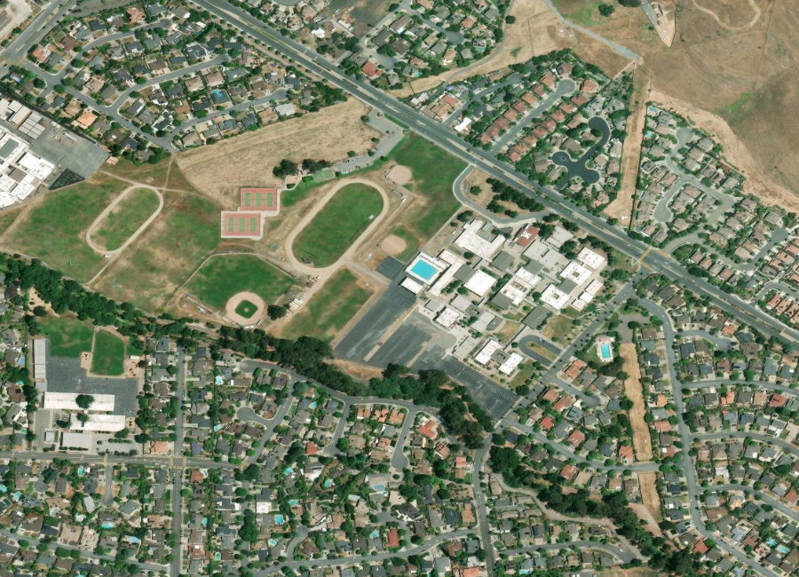
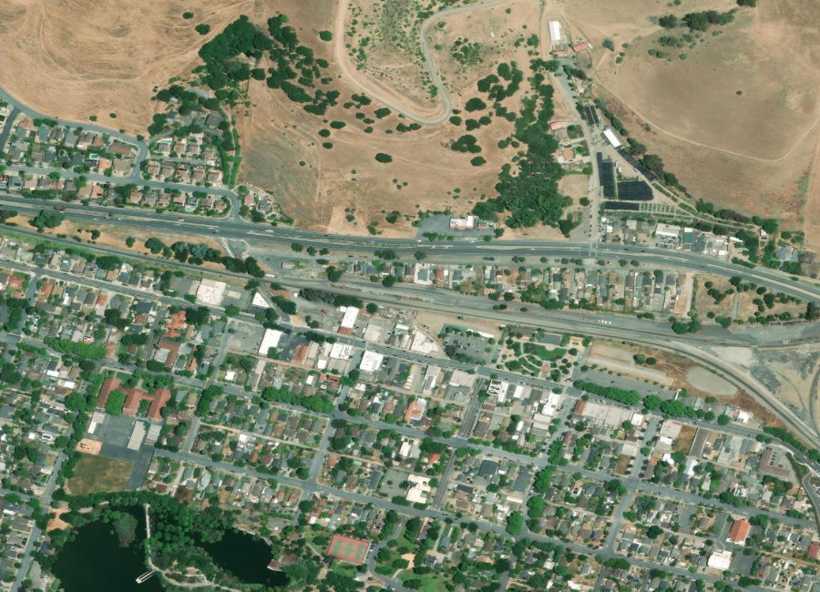
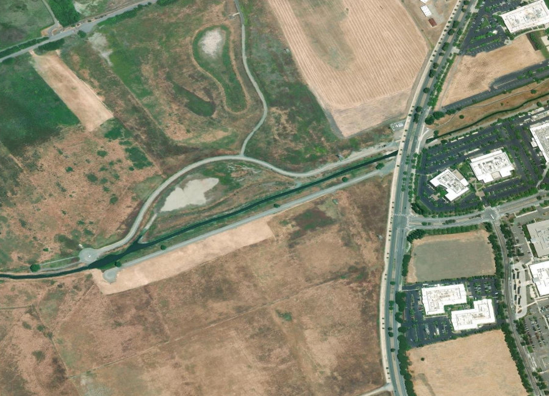
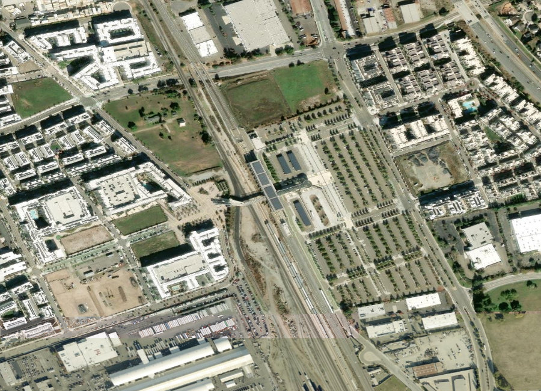

Alameda County · The East Bay
Formed in 1956 from five distinct towns, Fremont is the closest East Bay city to Silicon Valley — and still carries the character of its founding communities, from the historic silent-film district of Niles to the top-rated schools of Mission San Jose. Below you'll find current homes for sale and real estate listings in Fremont, updated throughout the day, whether you're buying your first Bay Area home or preparing to sell into today's competitive market.
If you'd like more information on any of these Fremont listings, just reach out — we're happy to share disclosures, recent nearby sales, and pricing history, and to walk you through anything you're curious about.
And for your convenience, feel free to register for a free account to receive alerts whenever new Fremont listings hit the market that match your criteria.
Source: Compass Market Insights, single-family homes in Fremont, July 2026 — 81 closed sales. Updated 20 August 2026. Fremont spans distinct districts (Niles, Mission San Jose, Ardenwood, Warm Springs) with very different price levels.
About the Community
Fremont was created in 1956 by merging five independent communities — Centerville, Niles, Irvington, Mission San Jose, and Warm Springs — and each still has its own distinct character today. It's the fourth most populous city in the Bay Area and the closest East Bay city to Silicon Valley, with a growing tech and manufacturing base of its own, including Tesla's Fremont factory.
Why People Love It Here
Explore the Area

Top schools, established estates

Historic, small-town character

Newer construction, family favorite

Fast-growing, BART-adjacent
Schools
Fremont Unified School District serves the entire city, with school assignment varying by the five founding districts — Mission San Jose's schools are especially sought after.
History
Fremont's roots trace to Mission San José, founded by Spanish missionaries in 1797. Its Niles district became the earliest home of California's motion picture industry from 1912 to 1915, hosting Essanay Studios and several Charlie Chaplin films, including The Tramp.
On January 23, 1956, the towns of Centerville, Niles, Irvington, Mission San Jose, and Warm Springs incorporated together as Fremont, named for explorer John C. Frémont. The city's tech and auto-manufacturing presence, including the former NUMMI plant now run by Tesla, grew rapidly from the 1980s onward.
The Chen Team in Fremont
We've helped families buy and sell across Fremont's most sought-after streets. When you work with us, you get second-generation local knowledge and Compass's full resources.
// Replace with your verified production figures
Market Trends
Quarterly median sold price, single-family homes. Bars are drawn to scale from zero. Year-over-year compares Q2 2026 (274 closed sales) with Q2 2025 (262). Connect to live market data.
Available Now